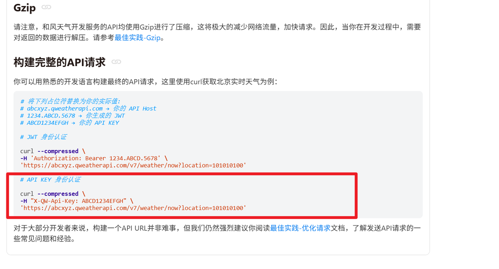

🌦️ 天气数据采集、入库与定时更新
工程实践提示：示例中的模型地址、数据库账号和密钥均应通过环境变量或独立配置文件注入；部署前还需补充权限控制、输入校验、超时重试、日志脱敏、来源引用与离线评估。
4 数据采集
spider_weather天气数据采集脚本，从 API 获取数据，写入 MySQL。保持数据库实时更新，支持代理查询。数据采集地址：https://dev.qweather.com/docs/api/weather/weather-daily-forecast/
项目中的定位：后台数据源，定时执行。
核心功能：API 请求、数据解析、写入/更新数据库、调度。
4.1 API Host申请
| API host介绍 | https://dev.qweather.com/docs/configuration/api-config/ |
|---|---|
| API host查看 | https://console.qweather.com/setting?lang=zh |
4.2 API Key申请
| API Key介绍 | https://dev.qweather.com/docs/configuration/authentication/#api-key |
|---|---|
| API Key查看 | https://console.qweather.com/project?lang=zh |
4.3 测试验证
ubuntu系统：
curl --compressed \ -H "X-QW-Api-Key: <天气 API Key>" \ "https://m7487r6ych.re.qweatherapi.com/v7/weather/3d?location=101010100"
curl --compressed -H "X-QW-Api-Key: <天气 API Key>" "https://m7487r6ych.re.qweatherapi.com/v7/weather/30d?location=101010100"
import requests import gzip import json # 配置（使用自己的密钥） API_KEY = "<天气 API Key>" url = "https://m7487r6ych.re.qweatherapi.com/v7/weather/30d?location=101010100" # 北京30天预报 headers = { "X-QW-Api-Key": API_KEY, "Accept-Encoding": "gzip" # 请求gzip，但不强制 } try: print("正在请求API...") response = requests.get(url, headers=headers, timeout=10) data = response.text parsed_data = json.loads(data) print("直接解析成功！") print(parsed_data) except requests.RequestException as e: print(f"直接解析失败哦: {e}")
TIPS:
数据传输格式：gzip
适用条件：数据是可压缩的（如 JSON、HTML、文本），网络带宽有限，或高并发场景。默认情况下，如果不设置 Accept-Encoding，服务器通常不压缩。
好处：降低延迟、节省带宽、提升用户体验。
官网介绍：https://dev.qweather.com/docs/best-practices/gzip/

5 数据导入
5.1 导包及配置
以下配置是关于天气API配置以及数据库配置，通过爬虫爬取天气信息网站存储到数据库用于作为A2A检索数据库。
位置：SmartVoyage/utils/spider_weather.py
import requests import mysql.connector from datetime import datetime, timedelta import schedule import time import json import gzip import pytz from SmartVoyage.config import Config conf = Config() # 配置 API_KEY = "<天气 API Key>" city_codes = { "北京": "101010100", "上海": "101020100", "广州": "101280101", "深圳": "101280601" } BASE_URL = "https://m7487r6ych.re.qweatherapi.com/v7/weather/30d" TZ = pytz.timezone('Asia/Shanghai') # 使用上海时区 # MySQL 配置 db_config = { "host": conf.host, "user": conf.user, "password": conf.password, "database": conf.database, "charset": "utf8mb4" }
5.2 连接数据库
connect_db函数
目标：建立 MySQL 数据库连接。
功能：使用 db_config 配置连接 MySQL，返回连接对象
输入输出：
输入：无。
输出：mysql.connector.connection.MySQLConnection 对象。
def connect_db(): return mysql.connector.connect(**db_config)
测试：
if __name__ == '__main__':
conn = connect_db()
print(conn.is_connected())
print("数据库连接成功！")
conn.close()
5.3 爬取数据
fetch_weather_data函数用于天气数据的爬取与解析。
目标：从和风天气 API 获取 30 天天气预报数据。
功能：发送 GET 请求，处理 gzip 压缩，解析 JSON 返回数据。
输入输出：
输入：city（字符串，如“北京”），location（字符串，如“101010100”）。
输出：JSON 字典（包含 daily 预报列表）或 None。
def fetch_weather_data(city, location): headers = { "X-QW-Api-Key": API_KEY, "Accept-Encoding": "gzip" } url = f"{BASE_URL}?location={location}" try: response = requests.get(url, headers=headers, timeout=10) response.raise_for_status() if response.headers.get('Content-Encoding') == 'gzip': data = gzip.decompress(response.content).decode('utf-8') else: data = response.text return json.loads(data) except requests.RequestException as e: print(f"请求 {city} 天气数据失败: {e}") return None except json.JSONDecodeError as e: print(f"{city} JSON 解析错误: {e}, 响应内容: {response.text[:500]}...") return None except gzip.BadGzipFile: print(f"{city} 数据未正确解压，尝试直接解析: {response.text[:500]}...") return json.loads(response.text) if response.text else None
测试：
if __name__ == "__main__":
weather_data = fetch_weather_data("北京", city_codes["北京"])
print(weather_data)
print("解析成功！")
5.4 查询数据更新时间
get_latest_update_time函数
目标：查询数据库中指定城市的最新更新时间。
功能：执行 SQL 查询，返回 weather_data 表中 city 的最新 update_time。
输入输出：
输入：cursor（MySQL 游标），city（字符串，如“北京”）。
输出：datetime 对象或 None。
def get_latest_update_time(cursor, city): cursor.execute("SELECT MAX(update_time) FROM weather_data WHERE city = %s", (city,)) result = cursor.fetchone() return result[0] if result[0] else None
测试：
if __name__ == "__main__":
# 建立数据库连接
conn = connect_db()
cursor = conn.cursor()
# 获取北京城市的最新更新的时间日期
print(get_latest_update_time(cursor, '北京'))
# 关闭数据库连接
cursor.close()
conn.close()
5.5 是否需要更新
should_update_data函数
目标：判断是否需要更新城市天气数据。
功能：检查最新更新时间是否超过 1 天，或强制更新。
输入输出：
输入：latest_time（datetime 或 None），force_update（布尔值）。
输出：布尔值（True/False）。
def should_update_data(latest_time, force_update=False): if force_update: return True if latest_time is None: return True # 时区问题：确保 latest_time 有时区信息 if latest_time and latest_time.tzinfo is None: latest_time = latest_time.replace(tzinfo=TZ) current_time = datetime.now(TZ) return (current_time - latest_time) > timedelta(days=1)
测试：
if __name__ == "__main__": from datetime import datetime, timedelta import pytz # 设置时区 TZ = pytz.timezone('Asia/Shanghai') # 模拟一个2天前的更新时间 latest = datetime.now(TZ) - timedelta(days=2) print("========模拟一个两天前的时间==============") print(latest) # 测试是否需要更新数据 print(should_update_data(latest)) # 根据更新判断结果输出相应信息 if should_update_data(latest): print(f"需要更新数据，上次更新时间：{latest}") else: print("没有数据，需要更新数据！")
5.6 存储数据
store_weather_data函数
目标：写入或更新天气预报数据到数据库。
功能：循环预报数据，使用 INSERT ON DUPLICATE KEY UPDATE 插入/更新 weather_data 表。
输入输出：
输入：数据库连接、mysql游标，城市、数据。
输出：无，数据库更新。
def store_weather_data(conn, cursor, city, data): if not data or data.get("code") != "200": print(f"{city} 数据无效，跳过存储。") return daily_data = data.get("daily", []) update_time = datetime.fromisoformat(data.get("updateTime").replace("+08:00", "+08:00")).replace(tzinfo=TZ) for day in daily_data: fx_date = datetime.strptime(day["fxDate"], "%Y-%m-%d").date() values = ( city, fx_date, day.get("sunrise"), day.get("sunset"), day.get("moonrise"), day.get("moonset"), day.get("moonPhase"), day.get("moonPhaseIcon"), day.get("tempMax"), day.get("tempMin"), day.get("iconDay"), day.get("textDay"), day.get("iconNight"), day.get("textNight"), day.get("wind360Day"), day.get("windDirDay"), day.get("windScaleDay"), day.get("windSpeedDay"), day.get("wind360Night"), day.get("windDirNight"), day.get("windScaleNight"), day.get("windSpeedNight"), day.get("precip"), day.get("uvIndex"), day.get("humidity"), day.get("pressure"), day.get("vis"), day.get("cloud"), update_time ) insert_query = """ INSERT INTO weather_data ( city, fx_date, sunrise, sunset, moonrise, moonset, moon_phase, moon_phase_icon, temp_max, temp_min, icon_day, text_day, icon_night, text_night, wind360_day, wind_dir_day, wind_scale_day, wind_speed_day, wind360_night, wind_dir_night, wind_scale_night, wind_speed_night, precip, uv_index, humidity, pressure, vis, cloud, update_time ) VALUES (%s, %s, %s, %s, %s, %s, %s, %s, %s, %s, %s, %s, %s, %s, %s, %s, %s, %s, %s, %s, %s, %s, %s, %s, %s, %s, %s, %s, %s) ON DUPLICATE KEY UPDATE sunrise = VALUES(sunrise), sunset = VALUES(sunset), moonrise = VALUES(moonrise), moonset = VALUES(moonset), moon_phase = VALUES(moon_phase), moon_phase_icon = VALUES(moon_phase_icon), temp_max = VALUES(temp_max), temp_min = VALUES(temp_min), icon_day = VALUES(icon_day), text_day = VALUES(text_day), icon_night = VALUES(icon_night), text_night = VALUES(text_night), wind360_day = VALUES(wind360_day), wind_dir_day = VALUES(wind_dir_day), wind_scale_day = VALUES(wind_scale_day), wind_speed_day = VALUES(wind_speed_day), wind360_night = VALUES(wind360_night), wind_dir_night = VALUES(wind_dir_night), wind_scale_night = VALUES(wind_scale_night), wind_speed_night = VALUES(wind_speed_night), precip = VALUES(precip), uv_index = VALUES(uv_index), humidity = VALUES(humidity), pressure = VALUES(pressure), vis = VALUES(vis), cloud = VALUES(cloud), update_time = VALUES(update_time) """ try: cursor.execute(insert_query, values) print(f"{city} {fx_date} 数据写入/更新成功: {day.get('textDay')}, 影响行数: {cursor.rowcount}") conn.commit() print(f"{city} 事务提交完成。") except mysql.connector.Error as e: print(f"{city} {fx_date} 数据库错误: {e}") conn.rollback() print(f"{city} 事务回滚。")
测试：
if __name__ == "__main__":
conn = connect_db()
cursor = conn.cursor()
data = fetch_weather_data("北京", "101010100")
store_weather_data(conn, cursor, "北京", data)
print("数据存储完成。")
5.7 更新数据
update_weather函数
目标：更新所有城市数据。
功能：查看是否满足更新条件，调用数据存储与数据爬取。
输入输出：
输入：更新条件
输出：无，数据库更新。
def update_weather(force_update=False): conn = connect_db() cursor = conn.cursor() for city, location in city_codes.items(): latest_time = get_latest_update_time(cursor, city) if should_update_data(latest_time, force_update): print(f"开始更新 {city} 天气数据...") data = fetch_weather_data(city, location) if data: store_weather_data(conn, cursor, city, data) else: print(f"{city} 数据已为最新，无需更新。最新更新时间: {latest_time}") cursor.close() conn.close()
测试：
if __name__ == "__main__": update_weather(force_update=True)
5.8 定时更新
setup_scheduler函数
目标：设置定时任务，每天在 PDT 16:00（北京时间 01:00）调用 update_weather 函数。保证数据的实时性。
功能：
使用 schedule 库注册每日任务。
进入无限循环，检查并运行待执行任务，每 60 秒检查一次。
项目中的定位：确保天气数据定时更新，保持 weather_data 表的数据新鲜，支持 weather_server.py 和 mcp_weather_server.py 查询。
def setup_scheduler(): # 北京时间 1:00 对应 PDT 前一天的 16:00（夏令时） schedule.every().day.at("16:00").do(update_weather) while True: schedule.run_pending() time.sleep(60)
原理测试：
from datetime import datetime, timedelta import time import schedule now = datetime.now() trigger_time = (now + timedelta(seconds=20)).strftime("%H:%M:%S") print(f"[测试日志] 当前时间: {now}") print(f"[测试日志] 设置任务在 {trigger_time} 触发 update_weather") # 使用 lambda 延迟执行 schedule.every().day.at(trigger_time).do(lambda: print("任务已触发!")) # 运行 30 秒以观察任务触发 end_time = now + timedelta(seconds=60) while datetime.now() < end_time: schedule.run_pending() print(f"[测试日志] 检查待执行任务: {datetime.now()}") time.sleep(1)
5.9 完整代码
位置：SmartVoyage/utils/spider_weather.py
import requests import mysql.connector from datetime import datetime, timedelta import schedule import time import json import gzip import pytz # 配置 API_KEY = "<天气 API Key>" city_codes = { "北京": "101010100", "上海": "101020100", "广州": "101280101", "深圳": "101280601" } BASE_URL = "https://m7487r6ych.re.qweatherapi.com/v7/weather/30d" TZ = pytz.timezone('Asia/Shanghai') # 使用上海时区 # MySQL 配置 db_config = { "host": "localhost", "user": "root", "password": "<数据库密码>", "database": "travel_rag", "charset": "utf8mb4" } def connect_db(): return mysql.connector.connect(**db_config) def fetch_weather_data(city, location): headers = { "X-QW-Api-Key": API_KEY, "Accept-Encoding": "gzip" } url = f"{BASE_URL}?location={location}" try: response = requests.get(url, headers=headers, timeout=10) response.raise_for_status() if response.headers.get('Content-Encoding') == 'gzip': data = gzip.decompress(response.content).decode('utf-8') else: data = response.text return json.loads(data) except requests.RequestException as e: print(f"请求 {city} 天气数据失败: {e}") return None except json.JSONDecodeError as e: print(f"{city} JSON 解析错误: {e}, 响应内容: {response.text[:500]}...") return None except gzip.BadGzipFile: print(f"{city} 数据未正确解压，尝试直接解析: {response.text[:500]}...") return json.loads(response.text) if response.text else None def get_latest_update_time(cursor, city): cursor.execute("SELECT MAX(update_time) FROM weather_data WHERE city = %s", (city,)) result = cursor.fetchone() return result[0] if result[0] else None def should_update_data(latest_time, force_update=False): if force_update: return True if not latest_time: return True current_time = datetime.now(TZ) latest_time = latest_time.replace(tzinfo=TZ) return (current_time - latest_time).total_seconds() / 3600 >= 24 def store_weather_data(conn, cursor, city, data): if not data or data.get("code") != "200": print(f"{city} 数据无效，跳过存储。") return daily_data = data.get("daily", []) update_time = datetime.fromisoformat(data.get("updateTime").replace("+08:00", "+08:00")).replace(tzinfo=TZ) for day in daily_data: fx_date = datetime.strptime(day["fxDate"], "%Y-%m-%d").date() values = ( city, fx_date, day.get("sunrise"), day.get("sunset"), day.get("moonrise"), day.get("moonset"), day.get("moonPhase"), day.get("moonPhaseIcon"), day.get("tempMax"), day.get("tempMin"), day.get("iconDay"), day.get("textDay"), day.get("iconNight"), day.get("textNight"), day.get("wind360Day"), day.get("windDirDay"), day.get("windScaleDay"), day.get("windSpeedDay"), day.get("wind360Night"), day.get("windDirNight"), day.get("windScaleNight"), day.get("windSpeedNight"), day.get("precip"), day.get("uvIndex"), day.get("humidity"), day.get("pressure"), day.get("vis"), day.get("cloud"), update_time ) insert_query = """ INSERT INTO weather_data ( city, fx_date, sunrise, sunset, moonrise, moonset, moon_phase, moon_phase_icon, temp_max, temp_min, icon_day, text_day, icon_night, text_night, wind360_day, wind_dir_day, wind_scale_day, wind_speed_day, wind360_night, wind_dir_night, wind_scale_night, wind_speed_night, precip, uv_index, humidity, pressure, vis, cloud, update_time ) VALUES (%s, %s, %s, %s, %s, %s, %s, %s, %s, %s, %s, %s, %s, %s, %s, %s, %s, %s, %s, %s, %s, %s, %s, %s, %s, %s, %s, %s, %s) ON DUPLICATE KEY UPDATE sunrise = VALUES(sunrise), sunset = VALUES(sunset), moonrise = VALUES(moonrise), moonset = VALUES(moonset), moon_phase = VALUES(moon_phase), moon_phase_icon = VALUES(moon_phase_icon), temp_max = VALUES(temp_max), temp_min = VALUES(temp_min), icon_day = VALUES(icon_day), text_day = VALUES(text_day), icon_night = VALUES(icon_night), text_night = VALUES(text_night), wind360_day = VALUES(wind360_day), wind_dir_day = VALUES(wind_dir_day), wind_scale_day = VALUES(wind_scale_day), wind_speed_day = VALUES(wind_speed_day), wind360_night = VALUES(wind360_night), wind_dir_night = VALUES(wind_dir_night), wind_scale_night = VALUES(wind_scale_night), wind_speed_night = VALUES(wind_speed_night), precip = VALUES(precip), uv_index = VALUES(uv_index), humidity = VALUES(humidity), pressure = VALUES(pressure), vis = VALUES(vis), cloud = VALUES(cloud), update_time = VALUES(update_time) """ try: cursor.execute(insert_query, values) print(f"{city} {fx_date} 数据写入/更新成功: {day.get('textDay')}, 影响行数: {cursor.rowcount}") conn.commit() print(f"{city} 事务提交完成。") except mysql.connector.Error as e: print(f"{city} {fx_date} 数据库错误: {e}") conn.rollback() print(f"{city} 事务回滚。") def update_weather(force_update=False): conn = connect_db() cursor = conn.cursor() for city, location in city_codes.items(): latest_time = get_latest_update_time(cursor, city) if should_update_data(latest_time, force_update): print(f"开始更新 {city} 天气数据...") data = fetch_weather_data(city, location) if data: store_weather_data(conn, cursor, city, data) else: print(f"{city} 数据已为最新，无需更新。最新更新时间: {latest_time}") cursor.close() conn.close() def setup_scheduler(): # 北京时间 1:00 对应 PDT 前一天的 16:00（夏令时） schedule.every().day.at("16:00").do(update_weather) while True: schedule.run_pending() time.sleep(60) if __name__ == "__main__": # 初始检查和更新 with mysql.connector.connect(**db_config) as conn: cursor = conn.cursor() cursor.execute(""" CREATE TABLE IF NOT EXISTS weather_data ( id INT AUTO_INCREMENT PRIMARY KEY, city VARCHAR(50) NOT NULL COMMENT '城市名称', fx_date DATE NOT NULL COMMENT '预报日期', sunrise TIME COMMENT '日出时间', sunset TIME COMMENT '日落时间', moonrise TIME COMMENT '月升时间', moonset TIME COMMENT '月落时间', moon_phase VARCHAR(20) COMMENT '月相名称', moon_phase_icon VARCHAR(10) COMMENT '月相图标代码', temp_max INT COMMENT '最高温度', temp_min INT COMMENT '最低温度', icon_day VARCHAR(10) COMMENT '白天天气图标代码', text_day VARCHAR(20) COMMENT '白天天气描述', icon_night VARCHAR(10) COMMENT '夜间天气图标代码', text_night VARCHAR(20) COMMENT '夜间天气描述', wind360_day INT COMMENT '白天风向360角度', wind_dir_day VARCHAR(20) COMMENT '白天风向', wind_scale_day VARCHAR(10) COMMENT '白天风力等级', wind_speed_day INT COMMENT '白天风速 (km/h)', wind360_night INT COMMENT '夜间风向360角度', wind_dir_night VARCHAR(20) COMMENT '夜间风向', wind_scale_night VARCHAR(10) COMMENT '夜间风力等级', wind_speed_night INT COMMENT '夜间风速 (km/h)', precip DECIMAL(5,1) COMMENT '降水量 (mm)', uv_index INT COMMENT '紫外线指数', humidity INT COMMENT '相对湿度 (%)', pressure INT COMMENT '大气压强 (hPa)', vis INT COMMENT '能见度 (km)', cloud INT COMMENT '云量 (%)', update_time DATETIME COMMENT '数据更新时间', UNIQUE KEY unique_city_date (city, fx_date) ) ENGINE=InnoDB DEFAULT CHARSET=utf8mb4 COLLATE=utf8mb4_unicode_ci COMMENT='天气数据表' """) conn.commit() # 立即执行一次更新 update_weather() # 启动定时任务 setup_scheduler()